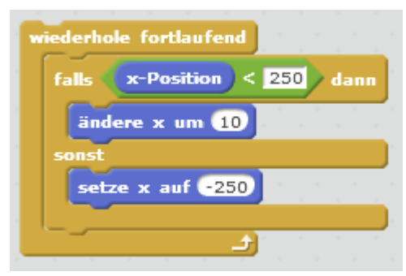
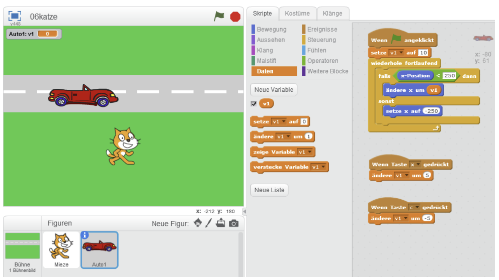
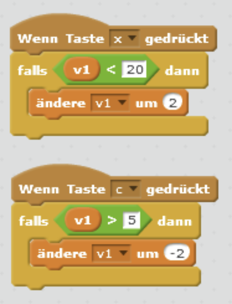
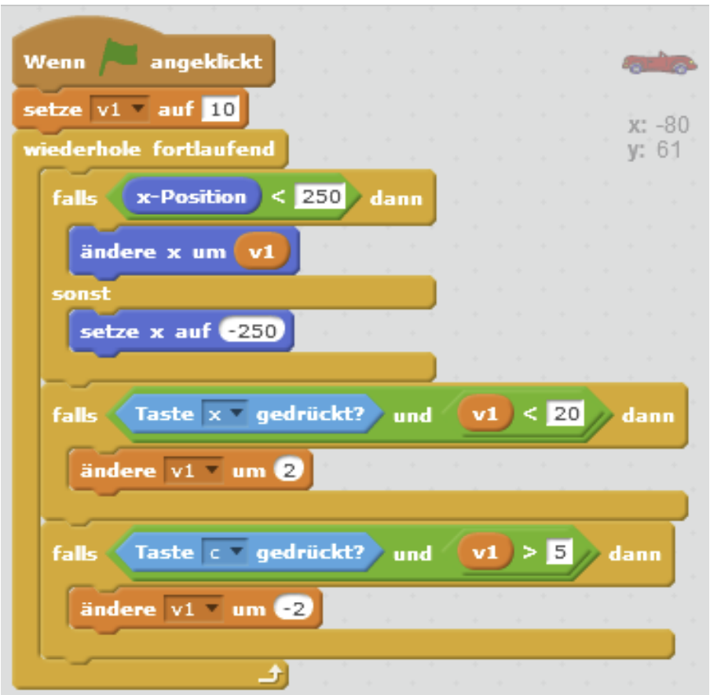
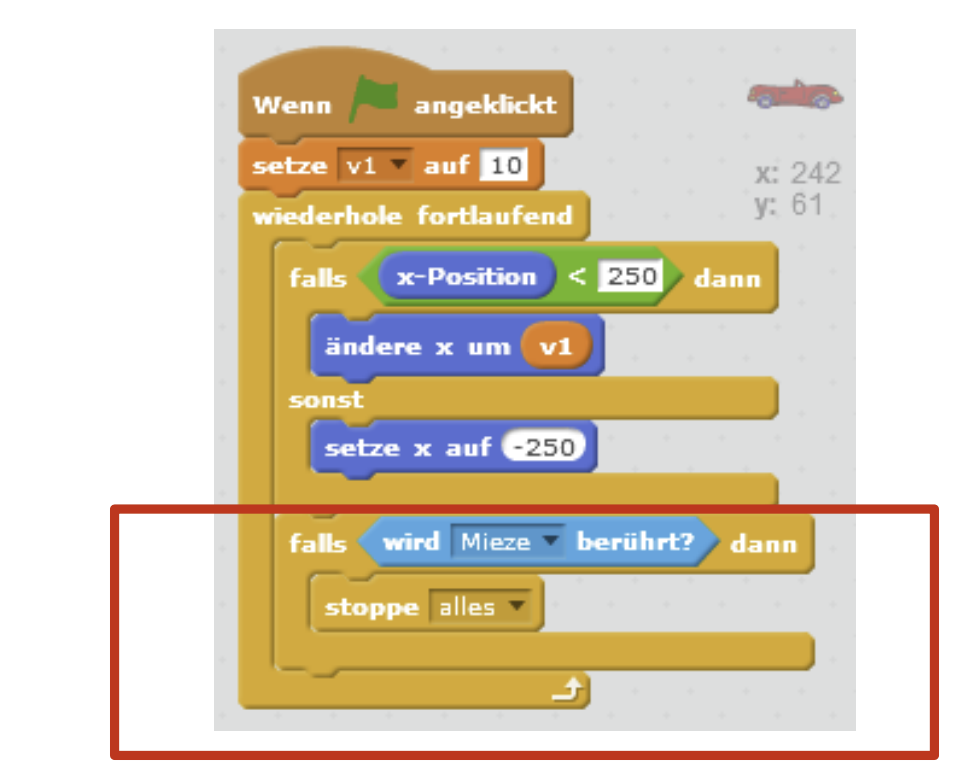

Warum Level1?
So erkennst du später sofort, welches Bild zu welchem Level gehört. Das hilft beim Ordnen deiner Projekte.
So erkennst du später sofort, welches Bild zu welchem Level gehört. Das hilft beim Ordnen deiner Projekte.
Eine Straße zeichnen und die Umgebung grün färben.
Auf der Seite gestaltest du die Bühne als Straßenbild.
Level1
Der neue Name ist Level1.
Ein Auto
Du legst als erstes ein Auto an.
Den Hintergrund zeichnest du im Zeicheneditor der Bühne. Danach nennst du das Bild Level1. Neue Figuren nennt man Objekte, z.B. ein Auto. Du kannst es selbst zeichnen oder aus der Bildbibliothek wählen.
| Begriff / Aufgabe | Zuordnung |
|---|---|
| Projekt speichern als 04katze | Du arbeitest in einer neuen Datei |
| Bühne gestalten | Straße und Grünfläche sind sichtbar |
| Neues Objekt anlegen | Ein Auto erscheint als neue Figur |
Ich habe auf der Bühne eine Straße mit grüner Umgebung gezeichnet und das Bühnenbild Level1 genannt. Das Auto ist eine eigene Figur auf der Straße. Beim Start wird es links positioniert und bewegt sich in einer Endlosschleife durch positive Änderungen der x-Koordinate nach rechts. Das Bühnenbild bleibt dabei unbewegt.
Sobald das Auto den Rand berührt, wird die Bedingung wahr. Dann kann eine Schleife stoppen oder eine andere Anweisung starten, zum Beispiel das Auto wieder links erscheinen lassen.
Eine Schleife wiederholt dieselben Befehle automatisch. Dadurch fährt das Auto in vielen kleinen Schritten, obwohl du den Bewegungsblock nur einmal einbaust.
Figur aus der Scratch-Bibliothek wählen; Neue Figur selbst zeichnen; Figur aus einer Datei laden; Figur mit der Kamera aufnehmen
Diese vier Wege stehen dir zur Verfügung.
Bei Steuerung
Die Schleifen liegen im Bereich Steuerung.
wiederhole bis
"wiederhole bis" stoppt, wenn die Bedingung erfüllt ist.
Ein Auto ist ein neues Objekt. Du siehst es in der Figurenliste. Im Kostümfenster kannst du die Farbe ändern. Mit der x-Koordinate bewegt sich das Auto nach rechts. Eine Schleife wie wiederhole 10 mal lässt es mehrfach fahren, und wiederhole bis stoppt am Rand.
| Begriff / Aufgabe | Zuordnung |
|---|---|
| Auto aus der Bibliothek wählen | Eine neue Figur erscheint |
| x-Koordinate ändern | Das Auto fährt nach rechts |
| wiederhole 10 mal | Die Bewegung passiert genau 10mal |
| wiederhole bis Rand berührt | Das Auto fährt bis zum Rand |
Wenn grüne Fahne angeklickt
Gehe zu x: -220 y: -20
Wiederhole fortlaufend
Ändere x um 10
Falls x-Position > 230
Setze x auf -230Das Auto bewegt sich fortlaufend nach rechts. Beim rechten Grenzwert springt es an den linken Start zurück. Ein geeigneter Grenzwert hängt von der Kostümgröße ab; eine Figur wird von Scratch nicht beliebig weit außerhalb der Bühne platziert.
Wiederhole 10-mal mit 'ändere x um 10' verändert x insgesamt um 100. 'Wiederhole bis Rand berührt' beendet die Schleife bei erfüllter Randbedingung. Nach dem Ende bewegt sich das Auto ohne weitere Befehle nicht weiter. Für dauerhaftes Fahren mit Rücksetzen gehört die Grenzprüfung in eine Endlosschleife.
Mit einer Variable speicherst du einen Wert, der sich während des Spiels ändern darf. So steuerst du die Geschwindigkeit flexibel, ohne jedes Mal den Bewegungsblock umzubauen.
Eine neue Variable anlegen
Deklarieren heißt: eine Variable anlegen.
Damit die Geschwindigkeit veränderbar wird
Schrittweite kann sich ändern und steuert so die Geschwindigkeit.
Schrittweite < 20, bevor du schneller machst; Schrittweite > 5, bevor du langsamer machst
So bleibt die Geschwindigkeit im sinnvollen Bereich.
Schrittweite ist eine Variable. Du legst sie unter Daten an. Die erste Wertzuweisung heißt Initialisierung. Für sinnvolle Grenzen brauchst du Bedingungen mit und, oder oder nicht.
| Begriff / Aufgabe | Zuordnung |
|---|---|
| Variable Schrittweite anlegen | Neue Datenblöcke erscheinen |
| Schrittweite beim Start auf 10 setzen | Die Startgeschwindigkeit ist festgelegt |
| x um Schrittweite ändern | Das Auto fährt je nach Schrittweite schneller oder langsamer |
| Grenzen Schrittweite < 20 und Schrittweite > 5 | Die Geschwindigkeit bleibt im sicheren Bereich |
x erhöht Schrittweite nur, wenn Schrittweite < 20 ist; c verringert sie nur, wenn Schrittweite > 5 ist. Beim Start setze ich Schrittweite auf 10 und verwende die Variable statt einer festen Zahl im Bewegungsblock. Die jeweilige Taste und die Grenze werden mit UND verknüpft. Die Änderung erfolgt jeweils um 1; bei längerem Tastendruck verhindert eine kurze Wartezeit zu schnelle Wiederholungen.
Das Auto stoppt.
Im Text steht: Wenn das Auto die Katze berührt, soll es zunächst stoppen.
Ereignisse
Nachrichten liegen unter Ereignisse.
Ein Zähler für erfolgreiche Überquerungen
Ein Zähler ist eine der vorgeschlagenen Erweiterungen.
So weißt du später, was die Nachricht auslöst, und kannst die Spielteile leichter verbinden.
Du speicherst dein Projekt als 07katze. Wenn das Auto die Katze berührt, soll es zuerst stoppt. Objekte können Nachrichten senden. Diese Blöcke findest du unter Ereignisse. Ein Zähler zählt Erfolge, und mit Leben wird das Spiel schwieriger. Weitere Level machen es spannender.
| Begriff / Aufgabe | Zuordnung |
|---|---|
| Projekt als 07katze speichern | Du arbeitest in einer neuen Datei |
| Wenn Auto Katze berührt, Auto stoppen | Das Auto hält bei der Kollision |
| Nachricht senden | Andere Figuren reagieren auf ein Signal |
| Zähler für Erfolge einbauen | Erfolgreiche Überquerungen werden gezählt |
Ich wähle einen Punktezähler und begrenzte Leben. Erreicht die Figur den oberen Zielbereich, erhöhe ich Punkte einmal und setze sie an den Start. Bei einer Kollision wird Leben einmal verringert und ebenfalls die Startposition gesetzt. Eine kurze Treffer-Sperre verhindert mehrfachen Abzug für denselben Kontakt. Bei Leben = 0 sende ich die Nachricht Spiel_ende und stoppe die Bewegungen. Beide Erweiterungen liefern ein klares Ziel und nachvollziehbare Folgen von Fehlern.
Weitere Autos erhalten eigene Bewegungs-/Kollisionsskripte. Bei Ankunft oben wird ein Zähler erhöht und das nächste Bühnenbild über eine Nachricht Level_start aktiviert. Mit höherer Schrittweite oder zusätzlichen Autos wird der nächste Level schwieriger. In einem Fluss-Level bewegt ein berührter Baumstamm die Figur mit; ohne tragenden Stamm wird ein Leben abgezogen und die Figur zurückgesetzt. Klare Nachrichten wie Katze_getroffen und Spiel_ende koordinieren die Figuren.




